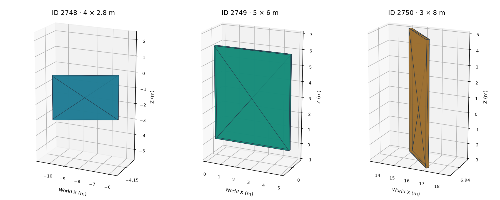

RVT CLEAN-ROOM RESEARCH · ACTUAL SAVED GEOMETRYThree new walls in a minimal native project
2,300seed scaffold identities preserved
0 → 3projected physical elements
200 mmexisting seed wall type

| Native wall ID | Independent IFC solid volume | Vertices / triangles |
|---|
| 2748 | 2.240000 m³ | 8 / 12 |
| 2749 | 6.000000 m³ | 8 / 12 |
| 2750 | 4.800000 m³ | 8 / 12 |
The writer adds the requested named levels and three walls, remaps dependencies to the seed, and preserves the original partition. Independent checks verify native BRep geometry, level constraints, reference closure and the three measured registration lists. The plots use actual IFC mesh arrays exported from the saved RVT.
Requested levels: Basement Δ (-3 m); Level 1 (0 m); Roof Ω (7 m).
Validation boundary: local research checks pass. This is a generated evidence-report screenshot, not Revit UI. Native regeneration, opening and re-saving remain untested. IFC schema validation uses explicit OwnerHistory correction controls.
Candidate SHA-256: df86178ad6b6c5a1c277c8dc76dfd2b68fc2c0ab2fbf15dd02b5fc74918e6e21